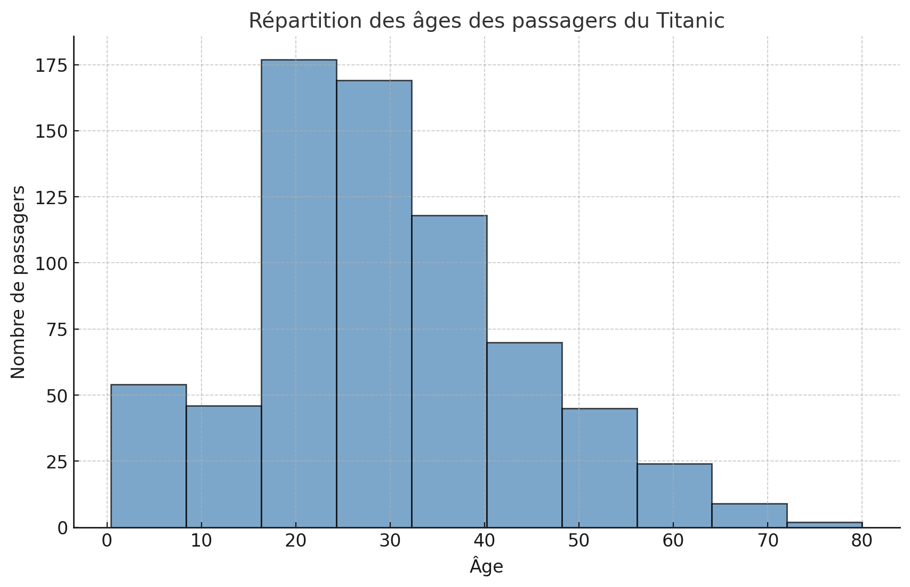
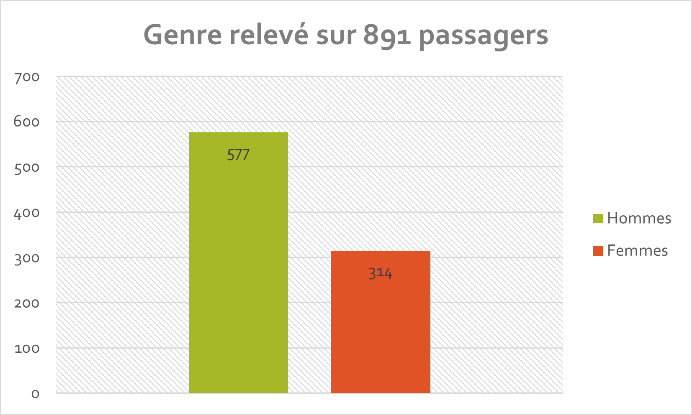
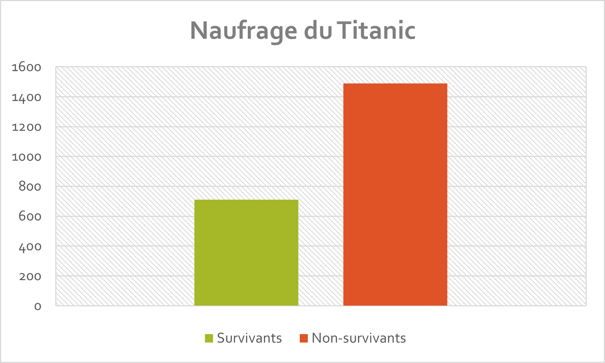

Données
Sur cette page, vous trouverez quelques données relatives au navire du Titanic.
  Source utilisée pour la récupération des données sur le Titanic.
Sur les données relevées ci-dessus, j'ai pu effectuer plusieurs diagrammes via le logiciel Microsoft Excel. Nous constatons que la plupart des passagers du Titanic étaient assez jeunes, avec une moyenne d'âge de 29,8 ans.
Sur 891 passagers, ce qui équivaut à environ 40,5 % des passagers au total, nous relevons un total de 577 hommes, contre 381 femmes. Sachant que le nombre total de passagers s'élève à 2 200, les hommes étaient en moyenne plus nombreux que les femmes.
Enfin, sur les 2 200 passagers il y eut environ 711 survivants, ce qui représente à peine 32 %. Quant aux non-survivants, le nombre s'élève à environ 1 489, ce qui équivaut à 68 %. A noter que les femmes survivantes ont été plus nombreuses que les hommes : celles-ci étaient à l'époque privilégiées par l'équipe du navire pour embarquer à bord des canots de sauvetage qui vinrent à proximité du naufrage, la nuit du 15 avril 1912.